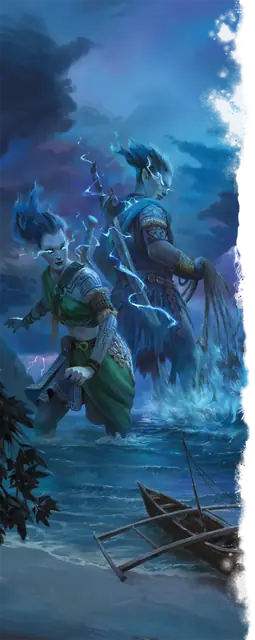

Штормовой великан
Storm Giant
Огромный Великан, Хаотичный Добрый

Класс Защиты 16 Инициатива +7 (17)
Хиты 230 (20к12 + 100)
Скорость 50 футов, Плавания 50 футов, Полёта 25 футов (парит)
| мод | спас | ||
|---|---|---|---|
| СИЛ | 29 | +9 | +14 |
| ЛОВ | 14 | +2 | +2 |
| ТЕЛ | 20 | +5 | +10 |
| мод | спас | ||
|---|---|---|---|
| ИНТ | 16 | +3 | +3 |
| МДР | 20 | +5 | +10 |
| ХАР | 18 | +4 | +9 |
Сопротивление урону Холод
Иммунитеты Звук, Электричество
Чувства пассивное Восприятие 20, Истинное зрение 30 футов
Языки Общий, Великаний
Опасность 13 (10 000 опыта; БВ +5)
Особенности
Амфибия. Штормовой великан может дышать как воздухом, так и под водой.
Действия
Мультиатака. Великан совершает две атаки Штормовым мечом или Громом и молнией в любой комбинации.
Штормовой меч. Бросок рукопашной атаки: +14, досягаемость 10 фт. Попадание: 23 (4к6 + 9) Рубящего урона плюс 13 (3к8) урона Электричеством.
Гром и молния. Бросок дальнобойной атаки: +14, дистанция 500 фт. Попадание: 22 (2к12 + 9) урона Электричеством, и цель Ослеплена и Оглушена до начала следующего хода великана.
Гроза (Перезарядка 5–6). Спасбросок Ловкости: Сл 18, каждое существо в Цилинде радиусом 10 футов и высотой 40 футов с центром в видимой великаном точке в 500 футах. Провал: 55 (10к10) урона Электричеством. Успех: Только половина урона.
Сотворение заклинаний. Штормовой великан сотворяет одно из следующих заклинаний, не нуждаясь в Материальных компонентах (заклинательная характеристика — Мудрость, Сл спасброска заклинаний 18):
Неограниченно: Обнаружение магии, Свет
1/день: Власть над погодой
Бонус мастерства +5
Среда обитания Прибрежье, Под водой
Сокровища Оружейные
Штормовой великан
Великан морей и небес
Штормовые великаны, высочайшие среди своего рода, живут бок о бок с необузданными силами природы. Во дворцах на дне морском и в замках, парящих среди облаков, они упиваются мощью могучих бурь. В гневе они способны управлять погодой и обрушивать с небес сокрушительные молнии. Но чаще эти великаны наблюдают за возвышением и падением царств, толкуют сверхъестественные предзнаменования и вмешиваются в дела мира лишь в час самой крайней нужды.